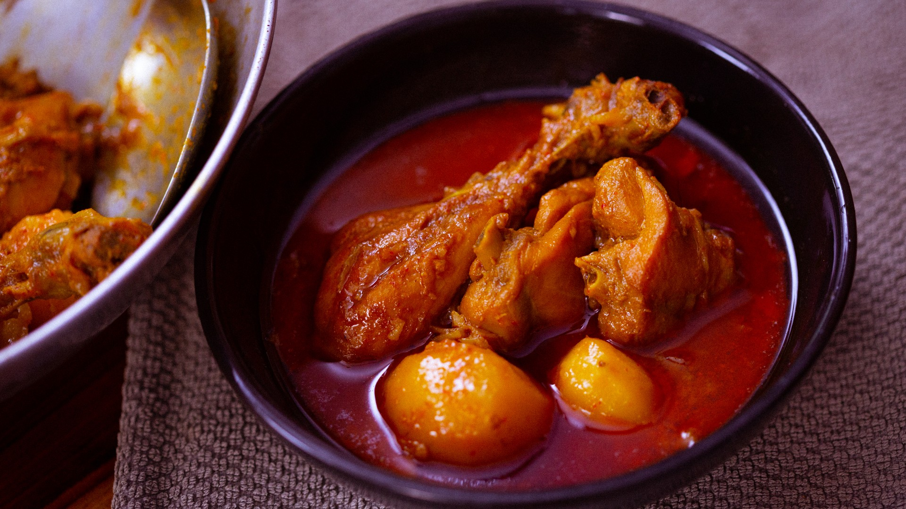

Murgir jhol

Description
The jhol in murgir jhol, refers to the runniest form of sauce in Bengali cooking. This chicken curry recipe is all about freshness of ingredients. It does away with everything but the essential. There is no tempering the oil with whole spices, no tomatoes and green chillies, none of the usual spices such as coriander and cumin, and no garnishing with coriander leaves. Which means that the few ingredients that do go in, have to be fresh if you would like to achieve the best results.
ingredients
- 800g chicken
- 150g potatoes
- 150g onions
- 4 pcs (3g) dried red chillies
- 2 pcs (5g) kashmiri red chillies
- 7g ginger
- 15g garlic
- 30g mustard oil
- 2 pcs bay leaves
- 16g salt
- 3g turmeric
- 8g sugar
- 25g yoghurt
- 300g water
- 1 pc cinnamon
- 3 pcs cloves
- 4 pcs cardamom
Steps
- Mix the chicken with turmeric and 8g salt. Set aside.
- Soak the dried red chillies and Kashmiri red chillies in hot water for 20 minutes.
- Halve the potatoes and slice the onions.
- Roughly chop ginger and garlic. Grind it along with the soaked chillies into a smooth paste.
- Heat mustard oil. Add the spice paste and cook it for 3 minutes until the raw smell of garlic goes away.
- Add the bay leaves.
- Add onions and fry them for 8 to 10 minutes.
- Add potatoes and the remaining salt (8g), and the yoghurt. Continue cooking until potatoes soften slightly, about 10 more minutes.
- Add the chicken. Braise it in the spices on medium heat for 20 minutes.
- Add hot water for the gravy, and cook until the chicken is done and potatoes are tender and juicy.
- On a sheel nora or in a mortar-pestle, grind whole gorom moshla, that is, green cardamom, cloves and cinnamon. with some water until it forms a smooth paste.
- Finish with freshly ground gorom moshla and some raw mustard oil.